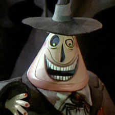
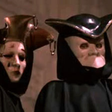
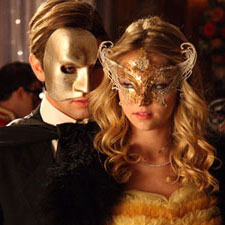

The Encyclopedia
A Field Guide to Marcel Dzama's 'A Game of Chess'
By Bill Brown
The following is the first edition of a compilation of themes found in Marcel Dzama’s film, A Game of Chess. The fourteen minute video depicts a game of chess brought to life through ballet. The full video is shown below and then the encyclopedia itself immediately thereafter.
Person with Multiple Faces
A person with multiple faces is an individual who has more than one complete set of sensory organs (sight, smell and taste) on the same head. Usually male, this person is often depicted as a god, villain or fantastical being of ambiguous morality. Each face sometimes represents a different personality of the same individual.
In Dzama’s A Game of Chess, there is a tall, black caped figure wearing a four faced mask. This character is the Black King, but is never actually seen playing on the board. As the leader of the black chess pieces, this character perpetually wants to annihilate the players on the white side.
-
Janus, the roman god of beginnings and transitions. He has one face looking toward the future and one toward the past.
-
Man-E-Faces, villain from the cartoon Masters of the Universe. He has three faces including a human, a monster and a robot.
-
Brahma, the four faced Hindu god of creation. Each head continually recites scripture.
-

The Mayor of Halloween Town from the movie Nightmare Before Christmas. He has one frowning face and one smiling face.
Chess Pieces Brought to Life
Chess pieces brought to life are moving animate beings, no longer dependent on players to be physically moved. While the pieces seem to have the ability to think for themselves they still act within the rules of the game. When players come in contact with each other they will literally kill or destroy their opponents.
In A Game of Chess the pieces exist in a pseudo-alternate world. The rules of the game are abstractly followed, resulting in a stylized form of war. However when pieces come in contact with each other, the player’s violent deaths portray a real and unforgiving world.
-
The Human Chess Game from Harry Potter. Life sized chess pieces are enchanted and and brought to life to guard the philosopher’s stone.
-
Battle Chess, a chess based computer game first released in 1988. The game is played with the standard rules of chess but each time a piece is taken an animated battle scene occurs.
-
Holochess, a chess game that uses animated, holographic representations of exotic aliens as the chess pieces. Holochess is played in the film series Star Wars.
-
The final battle between Alice and the Queen of Hearts in Tim Burton’s Alice in Wonderland includes marching white chess pieces among the participants.
Full Body Polka Dot Spandex
Full body polka dot spandex is a skin tight suit covered in dots. The suit completely covers the individual from head to toe including the individual’s face.
In A Game of Chess the pawns all wear full body polka dot spandex suits, one side in black suits with white dots and the other in white suits with black dots. The pawns all move in unison and are reminiscent of synchronized swimmers wearing swim caps.
-
Clowns, comedic performers who sometimes wear red and yellow polka dot suits.
-
The Spot, a comic book supervillain often paired against Spider-Man or Daredevil.
-
Green Zentai suit, a full body unmarked spandex suit popularized by Green Man in It’s Always Sunny in Philadelphia and two hockey loving fans of the Vancouver Canucks.
-
Yayoi Kusama, a Japanese artist and writer known for her use of polka dots.
Dance Fighting
Dance Fighting is the combination of moving the body in a rhythmic way usually to music with acts of aggression resulting in physical harm. In both dance and close combat fighting, the participants must read and react to the movements of the other performers.
In Marcel Dzama’s A Game of Chess the chess game is brought to life as a ballet. The pieces dance on the board and kill each other whenever a piece is captured. Like in other performative spectacles an audience watches the progression of the game.
-
Capoeira, a brazilian martial art that combines dance and music. Sometimes referred to as “Break Dance Fighting,” this style was popularized by Eddy Gordo, a character from the video game Tekken.
-
Dance Dance Revolution, an arcade game where players compete in a virtual “dance-off” on platforms and press big buttons with their feet.
-
The Nutcracker, a ballet where nutcracker’s come to life and battle rats.
-
Moshing, a style of dance where people push and shove into each other.
Female Snipers
Female snipers are markswomen skilled at shooting with great accuracy from long distances. The vast majority of snipers are male.
In Marcel Dzama’s A Game of Chess the main character, if there is one, would be the sniper and central pawn, both played by the same actress. As the sniper she shoots the chess player using the white pieces from a bedroom window. Respectively, as a black pawn she kills white pieces in the chess world.
-
Lyudmila Pavlichenko, a soviet sniper during World War II. With 309 kills, she is regarded as the most successful female sniper in history.
-
Annie Oakley, an American sharpshooter and exhibition shooter. She held a starring role in Buffalo Bill's Wild West Show.
-
Mathilda, an apprentice hitwoman played by Natalie Portman in the movie Leon: The Professional.
-
Katniss Everdeen, a hunter and archer from the book turned movie series Hunger Games.
Masked Audience
A masked audience is a group of people watching a performance whose faces are hidden or obscured. Through being masked the audience is transformed into participants. The masks are usually identical.
In Dzama’s A Game of Chess the audience is seen wearing round, smiling, cherub-like masks throughout the film. They are very dramatic in their reactions to the chess game, sometimes ringing cowbells and shakers in their enthusiasm. The last scene of the film shows the masks being lifted from the audience only to reveal individuals completely covered in white sheets.
- 
Characters in the film Eyes Wide Shut wear masks while watching unmasked entertainers.
-
Sleep No More, a site-specific play by theatre company Punchdrunk. Audience members are instructed to remain silent and masked at all times.
-
Guy Fawkes mask, a mask often worn at protests for anonymity popularized from the film, V for Vendetta.
- 
Masquerade balls, events where the participants attend in costume wearing a mask.
Thus concludes the first edition of Marcel Dzama’s A Game of Chess encyclopedia.